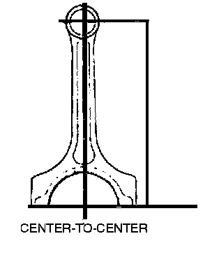
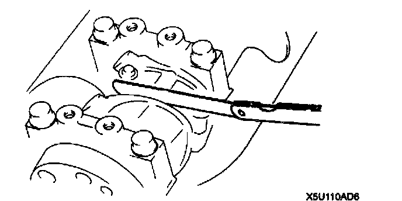

Rod Bearing Cap Torque & Clearance
CONNECTING ROD SPECIFICATIONSTorque 48-50 Nm (35-36 ft lbs)
Bending 0.05 mm (0.0020 in)
Distortion 0.07 mm (0.0028 in)

Center-to-Center Distance 132.85-132.95 mm (5.230-5.234 in)
Oil Clearance Inspection
Standard 0.028-0.048 mm (0.0012-0.0018 in)
Maximum 0.10 mm (0.0039 in)
Connecting Rod Bearing Thickness
Standard 1.504-1.520 mm (0.05922-0.05984 in)
0.25 Undersize 1.631-1.635 mm (0.06422-0.06436 in)
0.50 Undersize 1.756-1.760 mm (0.06914-0.06929 in)
0.75 Undersize 1.881-1.885 mm (o.07406-0.07421 in)

Connecting Rod Side Clearance
Standard 0.110-0.262 mm (0.005-0.010 in)
Maximum 0.30 mm (0.012 in)